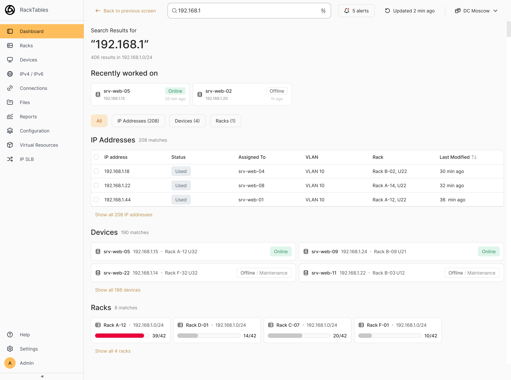

При инциденте
JTBD
Когда что-то упало, хочу быстро увидеть всю информацию об объекте, чтобы найти причину, а не тратить время на её поиск.
Барьер
Нужно найти данные среди кучи других, и если субданных много, уходит много времени.
Задача
Переработать главный экран, чтобы он не просто отражал структуру системы, а помогал быстрее понять состояние инфраструктуры и перейти к действию.
Что получилось
Экран показывает состояние дата-центра и то, что сломалось прямо сейчас. Конфликт IP-адреса разбирается тут же, за три клика — уходить в разделы не нужно.
Как я подошёл к решению
Обзор решения

 тот же экран в тёмной теме
тот же экран в тёмной теме
Главный экран
12 → 1
Вместо каталога из 12 разделов — один экран с оценкой состояния.
Конфликт IP-адреса
3 клика
Разрешение прямо из алерта на главной, без перехода в разделы.
Основа требований
2 интервью
DevOps-инженер и системный администратор. Решение построено на их барьерах.
Оговорка. Цифры описывают спроектированное решение, а не измеренный эффект. Продукт не выходил в прод — проверить можно интервью и макеты.
Интервью
Среди знакомых нашёл двух человек, чья работа ровно про то, что было в тестовом. Каждому задал пять вопросов: где ищут информацию об инфраструктуре, что мешает и что хотели бы видеть первым делом.
| 1 | Когда тебе нужно понять, что вообще есть в инфраструктуре (серверы, IP, зависимости), где смотришь? |
|---|---|
| 2 | Бывало, что что-то упало и ты не мог быстро понять, кто последним менял конфигурацию этого узла? |
| 3 | Если удавалось отследить, кто это сделал, сколько действий тебе требуется для этого? |
| 4 | Если бы был инструмент, где можно быстро найти любой объект инфраструктуры и увидеть его состояние, что для тебя было бы важно видеть первым делом? |
| 5 | Что конкретно в твоей работе вызывает больше всего неудобств и почему? |
| Поле | DevOps-инженер26 лет | Системный администратор20 лет |
|---|---|---|
| Инструменты | Docker, Kubernetes, Helm, Terraform, Ansible, GitlabCI | Kubernetes, Proxmox, Terraform, Ansible |
| Цитата | «Первым делом хочу видеть айпишник, метрики, логи и алерты» | «Состояние кластера и его ресурсы — наболевшее. Дашборд в графане какой-нибудь» |
| Что неудобно | Чтобы отследить причину инцидента, нужно пройти через несколько инструментов: версия, сборка, коммит, автор. | Единого инструмента для понимания состояния инфраструктуры нет. Приходится смотреть в Proxmox, Terraform, Ansible, в зависимости от того, как развёрнута среда. |
| Боли | Единого источника правды нет. Информация об инфраструктуре размазана по разным системам. | Ручные изменения на сервере не отслеживаются: если кто-то «залез руками и поменял», узнать, кто это сделал, можно только через bash history. |
Инсайт
DevOps-инженер
Инженер знает, что ему нужно при инциденте, но интерфейс не даёт это быстро. Приоритет информации чёткий: IP → метрики → логи → алерты.
Системный администратор
Состояние кластера и ресурсов хотят видеть первым делом. Сейчас это закрывают внешними инструментами вроде Grafana, значит, в самом продукте этого не хватает.
Ограничение выборки
Двух респондентов мало для статистики.
Но оба назвали одно и то же: единого места, где видно состояние инфраструктуры, нет. Данные собирают руками отовсюду. На этой конкретной боли я и стал строить решение.
Конкурентный анализ
Разобрал четыре системы по одним критериям: что показывает вход, как устроен поиск, есть ли история изменений и алерты.
| Критерий | NetBox | Device42 | Nautobot | Proxmox |
|---|---|---|---|---|
| Главный экран | Каталог плиток: Devices, IP Addresses, Racks, VLANs. Счётчики есть, но без контекста: ни состояния системы, ни алертов. | Дашборд из виджетов, состав инженер собирает сам. Есть Insights+ с аналитикой. Но это сводка, а не ориентация на действие. | Дашборд с активностью, статусами джобов и системными метриками. Ближе к рабочему инструменту, чем каталог, но фокус на автоматизации. | Реальное время: CPU, память, статус нод и VM. Лог задач всегда внизу экрана. Самый близкий к мониторингу состояния. |
| Поиск | Индексация в реальном времени, точное и частичное совпадение, сохраняемые фильтры. После 3.4 деградировал, и инженеры ушли в таблицы с фильтрами. | Глобальный поиск с автодополнением на главной, фильтры и операторы на страницах списков. Истории и команд нет. | Глобальный поиск через Cmd+K, с синтаксисом фильтрации по типу объекта. Истории нет. | Базовый, по имени объекта в шапке: VM, контейнеры, ноды. Поиска по IP нет, хотя этого просят сами инженеры. |
| Audit Log | Все изменения логируются в ObjectChange, к каждому можно добавить комментарий. На главном экране недоступен. | Централизованный лог: объект, что изменилось, источник, автор, время. На карточке объекта есть своя история изменений. | Полноценный: глобальный через меню и вкладка Changelog на каждом объекте. На главном экране отсутствует. | Task history показывает операции, но кто менял конфигурацию, не отслеживается. Собирать приходится из системных логов. |
| Alerts | Уведомления об изменениях объектов через подписки и event rules. IP-конфликт и загрузку стоек не выявляет. | Счётчики уведомлений на дашборде, правила по OS, subnet и discovery, интеграция с PagerDuty. Но это алерты об изменениях данных, не мониторинг состояния. | Нативных нет. События уходят через webhooks в Slack и PagerDuty. Мониторинг состояния идёт только внешними плагинами вроде Prometheus. | Системные события через email или Gotify. Панели алертов в интерфейсе нет. Состояние VM и нод смотрят внешними инструментами. |
| Вывод | Документирование, а не мониторинг. Проблемы состояния не выявляет сам, о них узнаёшь постфактум. | Документирование с сильной аналитикой. Но фокус на данных: статистику видно, а что с ней делать, нет. | Автоматизация сети, а не оперативное управление. Инструмент для опытных инженеров, но как точка входа для диагностики не подходит. | Единственный с дашбордом реального времени, ближайший референс. Но слабый поиск и отсутствие audit log не дают ему быть единым рабочим инструментом. |
Что из этого следует
Хранить данные умеют все. Показывать состояние почти никто.
Дашборд реального времени есть только у Proxmox, но без поиска и без истории изменений. Отсюда я и взял, что делать на главном экране.
JTBD
После конкурентного анализа и интервью я составил JTBD, которые помогли глубже понять, какие задачи пытаются выполнить пользователи в своих ситуациях. На их основе я выделил 4 основных требования и гипотезы для их решения.
При инциденте
JTBD
Когда что-то упало, хочу быстро увидеть всю информацию об объекте, чтобы найти причину, а не тратить время на её поиск.
Барьер
Нужно найти данные среди кучи других, и если субданных много, уходит много времени.
При входе в систему
JTBD
Когда я захожу в систему, хочу сразу понять состояние инфраструктуры, чтобы определить, требует ли что-то моего внимания.
Барьер
Информация разрозненная, от глубоких вкладок до других программ.
Когда нужно найти объект
JTBD
Когда мне нужен конкретный объект, хочу найти его напрямую, чтобы не тратить время на навигацию по разделам.
Барьер
Примитивный поиск, приходится самому искать нужное в одной строке.
При возвращении к работе
JTBD
Когда я возвращаюсь к работе, хочу быстро открыть последние объекты, чтобы продолжить без повторного поиска.
Барьер
Нужно вспомнить, что делал, и найти это в запутанной системе.
Требования
Что продукт обязан уметь
Гипотезы
Как я предположил это реализовать
Решение
Раньше главный экран был просто каталогом из 12 разделов без контекста, и непонятно, с чего начать. Теперь он сразу даёт оценку состояния дата-центра, показывает активные проблемы и позволяет сразу перейти к недавним действиям.
 скриншот «до» не подложен
скриншот «до» не подложен
Один адрес назначен двум устройствам, оба работают нестабильно. От алерта до закрытия три клика. Если инженер выберет рискованный адрес, система предупредит.
Устройство выключили в обход системы, причина неизвестна. Система спросит её при включении, а если ответа нет, честно это пометит.
Инженер помнит кусок адреса или имя устройства. Этого достаточно, чтобы найти нужное.

Итог
Что получилось
Что сделал
Чего пока не знаю
Что доделал бы
Спасибо, что дочитали